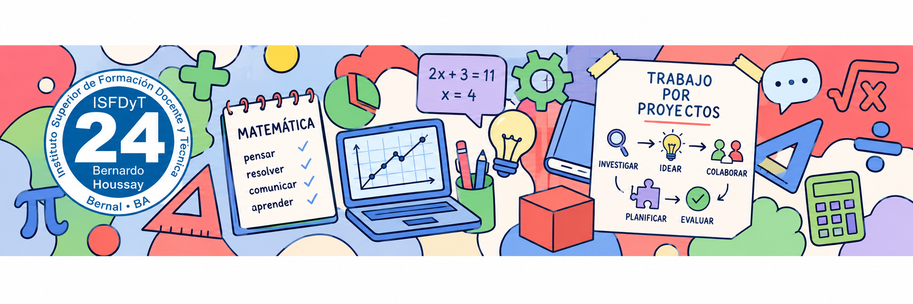
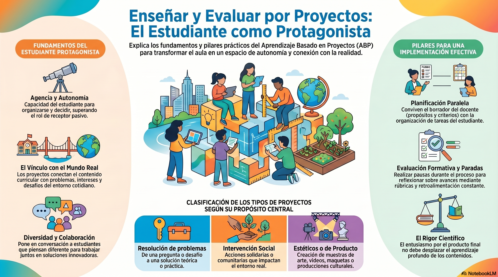

La fecha límite del proyecto se mantiene firme para garantizar la instancia de socialización y cierre del ciclo lectivo.
En el Aprendizaje Basado en Proyectos, la evaluación no es un examen al final del camino para colocar una nota: es una herramienta de aprendizaje, autorregulación y andamiaje permanente. Hoy construiremos instrumentos formativos para el aula de secundaria y diseñaremos con rigor las dos rúbricas analíticas obligatorias (de proceso y de producto final).
Para diseñar una propuesta de ABP coherente, es imprescindible cambiar la lógica tradicional del examen por una cultura de la evaluación auténtica. Siguiendo a Rebeca Anijovich (La evaluación significativa, El valor formativo de la retroalimentación), el plan debe responder a tres principios rectores:
Los estudiantes de secundaria no pueden adivinar qué espera el docente. Los criterios deben ser explícitos, compartidos y discutidos antes de comenzar las tareas.
Debe ser oportuna, constructiva y descriptiva: indicar aciertos, señalar qué falta y brindar sugerencias concretas de acción (feedforward) para mejorar la producción.
El alumno debe reflexionar sobre sus propios procesos de pensamiento: ¿Qué estrategia matemática utilicé? ¿Qué error me ayudó a comprender? ¿Cómo resolví el obstáculo con GeoGebra o la app?

Infografía de referencia: Aportes conceptuales de Rebeca Anijovich sobre la evaluación auténtica en ABP para el profesorado de matemática.
Un protocolo sugerido para incorporar en su proyecto tanto para las devoluciones docentes como para la coevaluación entre pares en secundaria:
En la propuesta pedagógica que están diseñando, la evaluación debe desplegarse a lo largo de todo el recorrido del proyecto en secundaria:
Objetivo: Detectar ideas previas, intuiciones erróneas y grado de familiaridad con los conceptos matemáticos del recorte antes de lanzar el reto.
Instrumentos sugeridos: Cuestionarios breves no graduados, nubes de palabras interactivas (Mentimeter), murales de inicio (Padlet), lluvia de ideas guiada a partir de una noticia real o disparador visual.
Objetivo: Acompañar el avance de las actividades didácticas, la modelización con deslizadores en GeoGebra, la experimentación con el simulador de Vibe Coding y el trabajo en equipo.
Instrumentos sugeridos: Rúbrica analítica intermedia de proceso (obligatoria), listas de cotejo de autorregulación, dianas de autoevaluación, tickets de salida metacognitivos ("Hoy aprendí...", "Me trabé cuando...", "Pude verificar con GeoGebra que...").
Objetivo: Valorar la calidad del producto final tangible/digital, la rigurosidad conceptual matemática y la capacidad de comunicar los resultados ante una audiencia real.
Instrumentos sugeridos: Rúbrica analítica sumativa del producto final (obligatoria), grilla de coevaluación para la feria/muestra escolar y autoevaluación de cierre del proyecto.
Una rúbrica analítica es una matriz que desglosa una producción o desempeño en criterios observables y describe de forma cualitativa los distintos niveles de logro alcanzados. Para la propuesta en secundaria, cada estudiante elaborará dos rúbricas independientes: una formativa intermedia (de proceso) y una sumativa e integradora (del producto final).
Esta rúbrica acompaña el recorrido del estudiante durante las fases de indagación y modelización. Se sugiere definir de tres a cuatro criterios observables vinculados a la dinámica de trabajo de su proyecto:
Niveles de desempeño sugeridos: sobresaliente / destacado, adecuado / logrado, en proceso.
Esta rúbrica evalúa la calidad global del artefacto tangible o digital alcanzado y su comunicación ante la audiencia real destinataria:
Niveles de desempeño sugeridos: sobresaliente / destacado, adecuado / logrado, en proceso.
Durante la clase presencial de hoy, cada estudiante trabajará sobre su documento personal de Google Drive en la sección 13: Plan de evaluación formativa y rúbricas, alcanzando las siguientes metas:
Visualización de la recta final del calendario académico del profesorado:
| Encuentro / Fecha | Fase del proyecto | Objetivo y entregable parcial |
|---|---|---|
|
Clase 18 (03/09) Clase 1 del proyecto |
Lanzamiento del ABP | Presentación de la estructura del proyecto individual ABP y ejes temáticos sugeridos (Gamificación, STEAM, Perspectiva de Género, etc.). |
|
Clase 19 (10/09) Clase 2 del proyecto |
Pregunta y contexto | Pregunta de investigación desafiante, destinatarios (año de secundaria), contexto escolar y recorte de contenidos curriculares. |
|
Clase 20 (17/09) Clase 3 del proyecto |
Fundamentación y objetivos | Redacción del marco teórico-didáctico (ABP y autores: Anijovich, Furman, Perrenoud, Pochulu), objetivos y secuencia de actividades. |
|
Clase 21 (24/09) Clase 4 del proyecto |
Taller de Vibe coding | Desarrollo del simulador o mini-aplicación interactiva creada con IA para la propuesta docente, con enfoque DUA. |
|
Clase 22 (08/10) Clase 5 del proyecto |
GeoGebra integral y libro | Creación de la página dinámica, estructuración del Libro en GeoGebra y definición del producto final y audiencia real. |
|
Clase 23 (22/10) Clase de hoy |
Plan de evaluación y rúbricas | Diseño del plan de evaluación formativa (enfoque Anijovich). Elaboración de instrumentos procesuales y diseño de las 2 rúbricas analíticas completas. |
|
Clase 24 (29/10) Clase 7 del proyecto |
Anexos: resolución y uso ético de IA | Resolución técnico-matemática completa de todas las actividades, anticipación de errores conceptuales y declaración ética de IA. Coevaluación entre pares. |
|
Clase 25 (05/11) Entrega final |
Entrega final y socialización | Entrega definitiva del documento en Google Drive y Libro de GeoGebra publicado. Presentación y socialización de proyectos. |